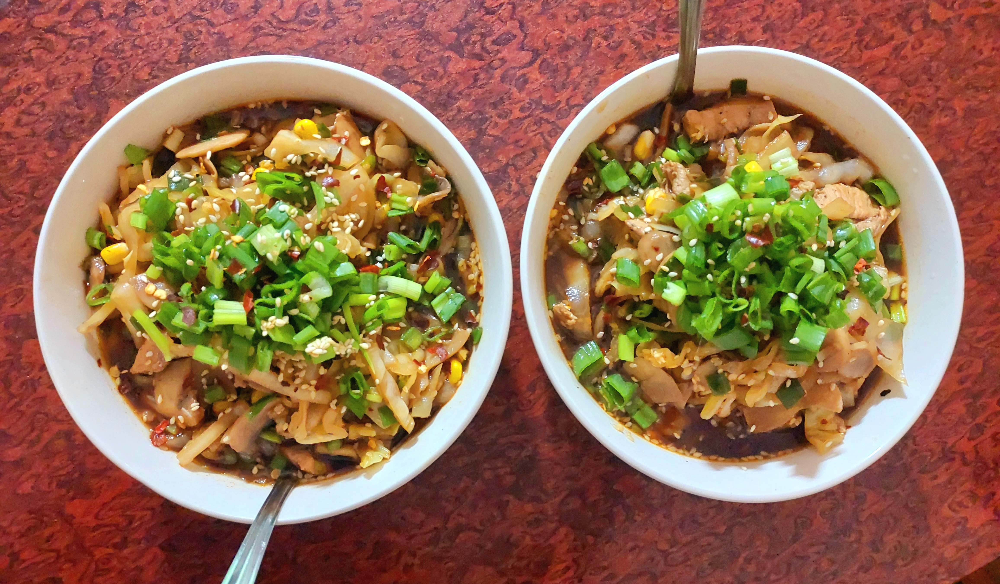

Miso Gochujang Chicken Nabe

Journal Notes
- Prepared: 25 June 2026
- Cuisine: Korean-Japanese 🇰🇷🇯🇵
- Difficulty: 🔥🔥🔥💧💧
- Servings: 2
🍜 Why I Made It
Well, I meant to try something new.
🛒 Ingredients
Protein
- 1 chicken breast (250–300g)
Vegetables
- 200g button mushrooms, sliced
- 2 cups cabbage, roughly chopped
- 1 cup corn kernels
Aromatics
- 4 cloves garlic, minced
- 1 inch ginger, grated
Broth
- 3 cups (750 ml) chicken stock
- 1½ tbsp miso paste
- 1 tbsp gochujang
- 1 tbsp soy sauce
- 1 tsp sugar or honey
- 1 tsp sesame oil
Garnish
- Spring onions
- Sesame seeds
- Chili flakes
👨🍳 Method
-
Prepare the Chicken
Marinate thinly sliced chicken breast with ½ tsp salt, black pepper, 1 tsp soy sauce, and 1 tsp sesame oil for 15 minutes. -
Build Flavor
- In a hot pot over medium heat, cook garlic and ginger in 1 tbsp neutral oil for 30 seconds.
- Add mushrooms and cook them for 7 minutes. Let it release water and then reabsorb it.
-
Make the Broth
- Add chicken stock and bring to a gentle simmer.
- Adding sugar and soy saurce, simmer for 5 minutes.
-
Add Chicken
With sliced chicken added, simmer gently for 5–6 minutes. -
Add Vegetables
Cook for another 5-6 minutes after adding cabbage and corn. -
Add Miso and Gochujang
- Mix 1½ tbsp miso and 1 tbsp gochujang into a ladle of hot broth until smooth.
- Stir this mixture back into the pot.
- Add 1 tsp of sesame oil and heat gently for 1 minute.
✅ What Went Well?
Everything came together brilliantly well.
The broth was sharp, strong and flavorful.
The dish tasted remarkably delicious with it covering a bowl of rice.
🔧 What I'd Change Next Time
I like it just the way it is. I don't feel like tweaking this recipe as yet. Who knows? Maybe in the future I might modify it slightly.
🤔 Would I Make It Again?
I would love to, but not so frequently. Although the combination was good, I'd like to enjoy the simplicity of Miso and Gochujang in their own separate dishes rather than to mix them together.